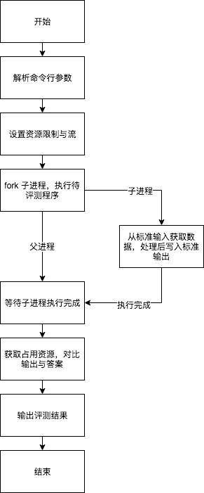

从零开始实现一个 OJ 评测姬。
在前五篇里，我们介绍了写一个评测姬所需的基本的原理。在这篇文章里，我们将整合前五篇所将的知识，完成一个完整可用的评测姬。
整体流程
简单起见，我们不考虑 OJ 的其他部分，如网站、数据库等。我们的评测姬将通过命令行进行调用、通过命令行提供参数、并将评测的结果写到控制台。下面是我们评测姬的整体流程。

解析命令行参数
因为除了解析命令行参数外，其他的部分我们前面的文章中已经进行了讲解。因此这里只介绍一下如何解析命令行参数。
在 Linux 中，有函数 getopt 可以提供命令行参数解析功能。在 macOS 中用 gcc 编译器也可以使用这个函数。 getopt 的使用方法可以参照文档。
万事俱备
至此，我们已经介绍了我们要写的评测姬所需的全部技术，只要将其组装起来即可。
https://github.com/MeiK2333/ZeroJudger/tree/master/ZeroJudger
这是我实现的一个完整的评测姬，感兴趣的同学可以参照一下。这个评测姬实现了资源限制、流重定向、答案对比评测等功能，如果能够看懂这个评测姬的代码，应该也就具备了自己写一个评测姬的能力。
还差点什么？
如果你看了我写的评测姬的话，就会发现，我的评测姬里面没有任何关于安全方面的限制。这是我有意而为之，原因有以下三点：
第一点，安全方面的限制，不同的评测姬实现不同，我也不能保证我写的能有多么大的参考意义。
第二点，安全方面限制需要过多的介入系统调用，使用很多第三方方案，也与本系列“从零开始”的初衷相悖。
第三点，也是最重要的一点：我认为现有的评测姬的安全限制多数不够好用。基于系统调用限制的评测姬容易误伤，而不做限制的评测姬又容易被攻击。我的想法是，现在 Docker 等容器技术已经很成熟了，完全可以用 Docker 等方案来代替自己写的安全限制，自己只需要写评测流程即可。依托成熟方案，既有更好的保障，也更加简单不易出错。
总结
从四月份的第一篇，到现在七月底的第六篇，拖了三个月的系列博客终于是完结了。
虽然到目前为止，如何写评测姬系列博客的访问量 <= 10（第五篇一共是 9 个访问），其中大部分还是机器人，但写这系列过程还是挺有意思的。尤其是每过一阵子回头来看自己的博客，感觉自己写的哪哪都是问题……嗯……加油共勉吧！